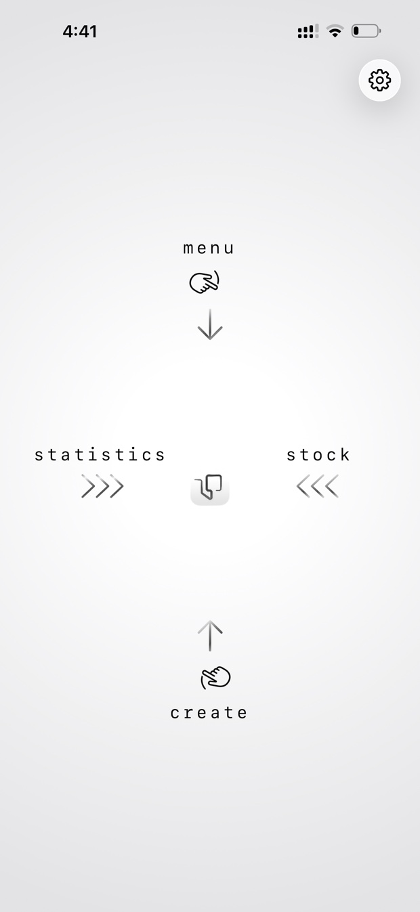
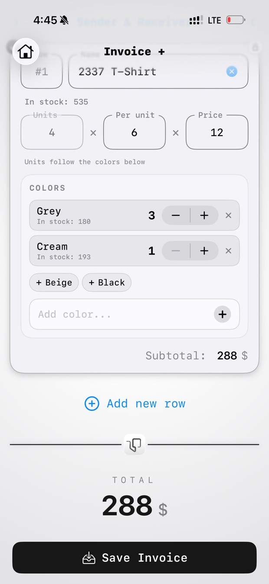
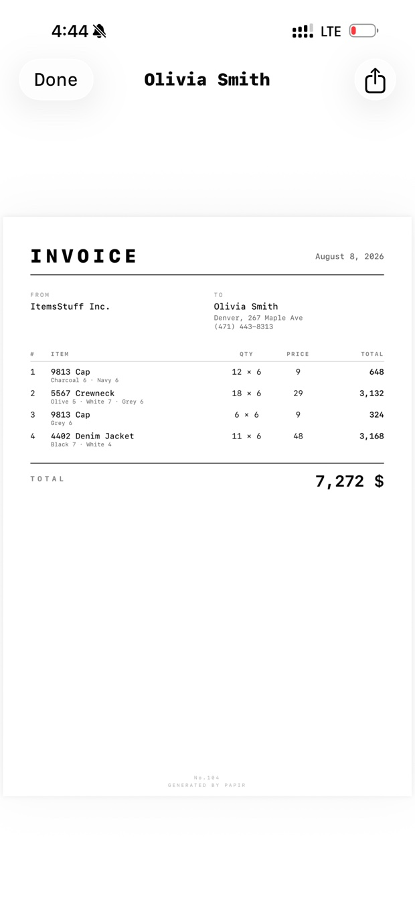
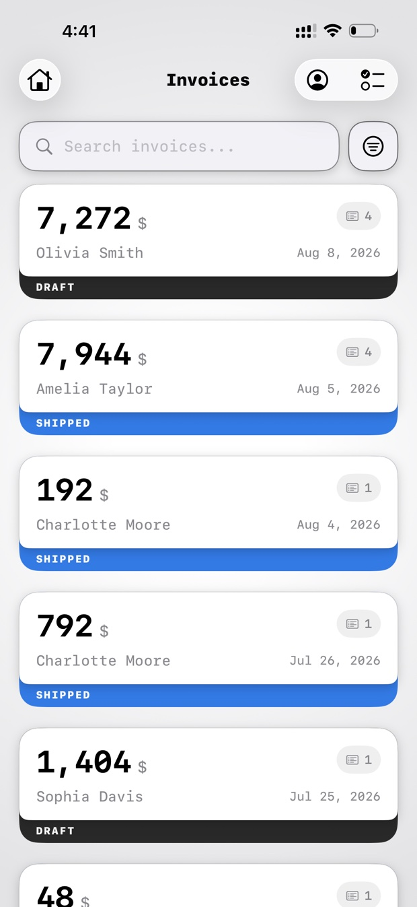
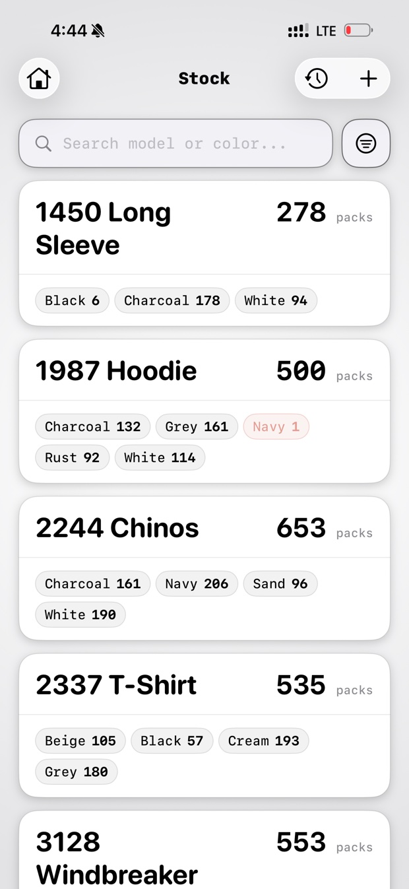
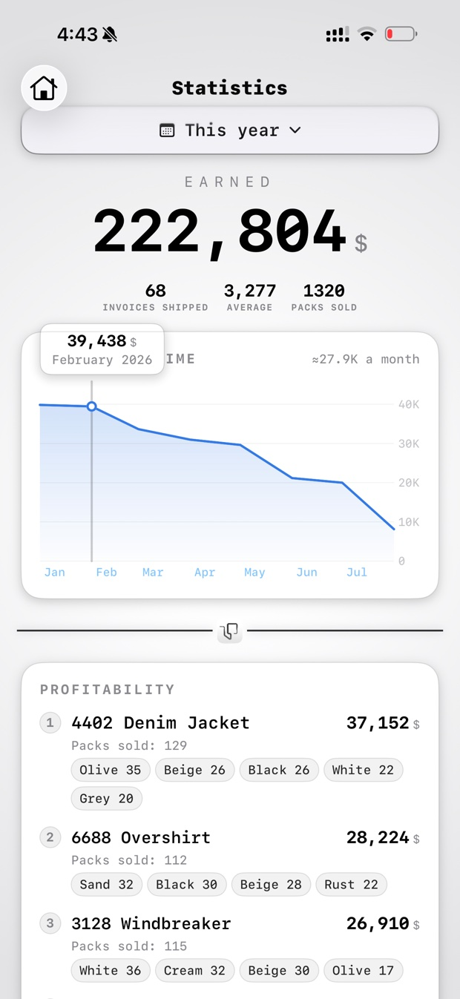

Для тих, хто продає товар коробками
Випишіть накладну, віддайте клієнту чистий PDF формату A4 і дивіться, як пачки сходять зі складу під час відвантаження. Один застосунок замість зошита й таблиці, які до п'ятниці вже не збігаються.
Незабаром в App Store Як це працюєiPhone · iOS 18 або новіша · English, Українська, Русский, Polski

Головний екран — це чотири напрямки й нічого більше. Угору, щоб виписати накладну, вниз — до вже написаних, ліворуч — склад, праворуч — що продалося. Жодних вкладок і нічого схованого на третьому рівні меню.

Рядок — це модель, скільки пачок, скільки штук у пачці та ціна. Додаєте кольори, і вони розбирають пачки між собою, тож кількість ніколи не розійдеться з розкладкою. Залишок показується біля кожного кольору просто під час набору, тож ви дізнаєтеся про нестачу до того, як щось пообіцяли.

Зберігаєте — і Papir малює PDF формату A4: ваше ім'я, ім'я клієнта, кожен рядок із кольорами й кількістю, сума. Англійською, українською, російською або польською, і мова документа може відрізнятися від мови застосунку, бо той, хто його читає, часто говорить іншою.

Усе, що ви написали, найновіше вгорі, із сумою та станом. Чернетка — це ще намір; відвантажена означає, що пачки вже зійшли зі складу. Пошук за клієнтом чи моделлю або фільтр до чогось одного.

Рахуйте пачки за моделлю та кольором. Позначили накладну відвантаженою — саме ці пачки зійшли; повернули в чернетку — повернулися назад. Колір, якого лишається мало, каже про це червоним, а той, що закінчився, каже гучніше.

Гроші за місяцями, найприбутковіші моделі з кольорами, які їх витягли, і покупці, яких варто тримати. Тільки відвантажені накладні, бо чернетка — це ще не гроші, а екран, який удавав би інакше, привчив би не вірити жодному числу на ньому.
Рядки з моделлю, кольорами, кількістю та ціною. Зберігаєте — і Papir малює PDF формату A4 англійською, українською, російською або польською. Мова документа може відрізнятися від мови застосунку.
Рахуйте пачки за моделлю та кольором. Позначили накладну відвантаженою — пачки зійшли зі складу самі. Повернули в чернетку — повернулися назад.
Кожен рух записується, тож будь-яке число може пояснити, звідки воно взялося. Продати більше, ніж є на складі, можна — число почервоніє, доки не перерахуєте.
Гроші за місяцями, найприбутковіші моделі та найкращі покупці. Тільки відвантажені накладні: чернетка — це намір, а не гроші.
Кому ви відправляєте: місто, адреса, телефон. Обираєте клієнта — і його дані друкуються під іменем у документі.
Одна книга Excel для бухгалтера або повна резервна копія, яку можна відновити. Створені PDF лежать у застосунку «Файли».
Без акаунта. Без підписки. Без аналітики, стеження, реклами й будь-якого стороннього коду. Усе, що ви вводите, лишається на вашому iPhone.
Увімкнете iCloud — накладні синхронізуються у вашу власну приватну базу iCloud, яку не бачить ніхто, зокрема й розробник: у нього просто немає сервера, щоб її прочитати. Прочитайте політику конфіденційності, вона коротка, бо казати особливо нічого.